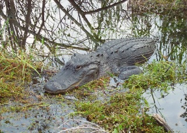
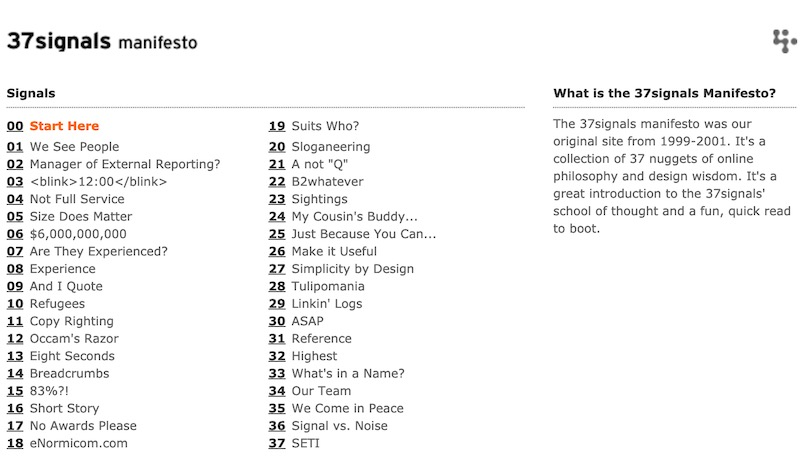
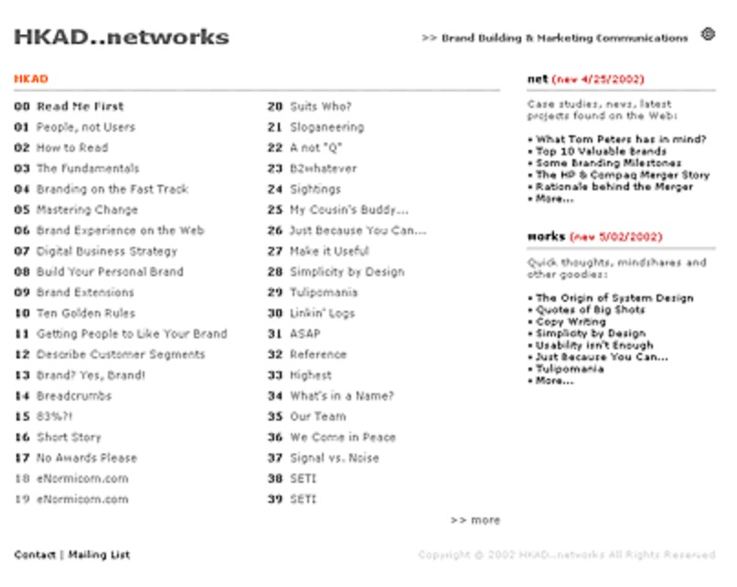
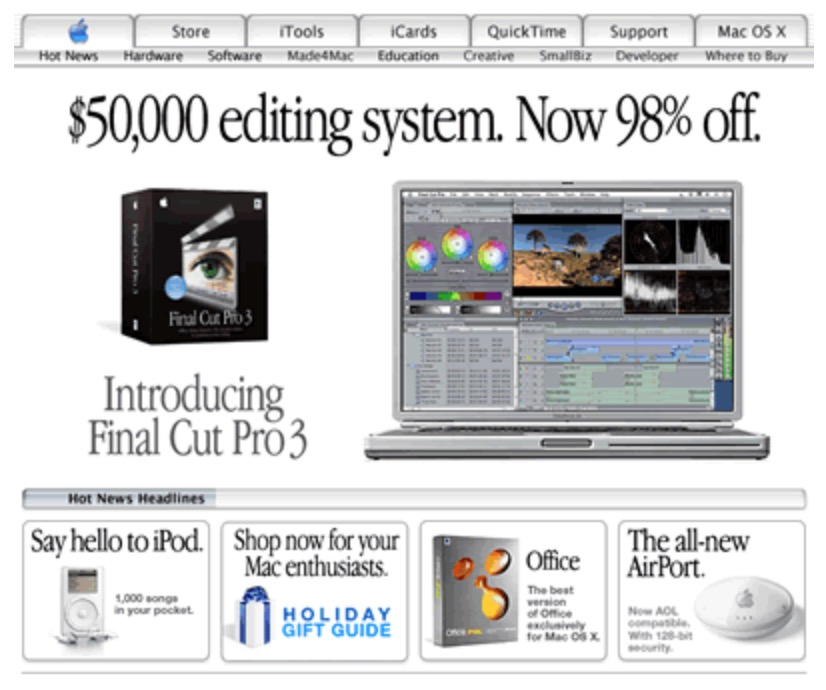
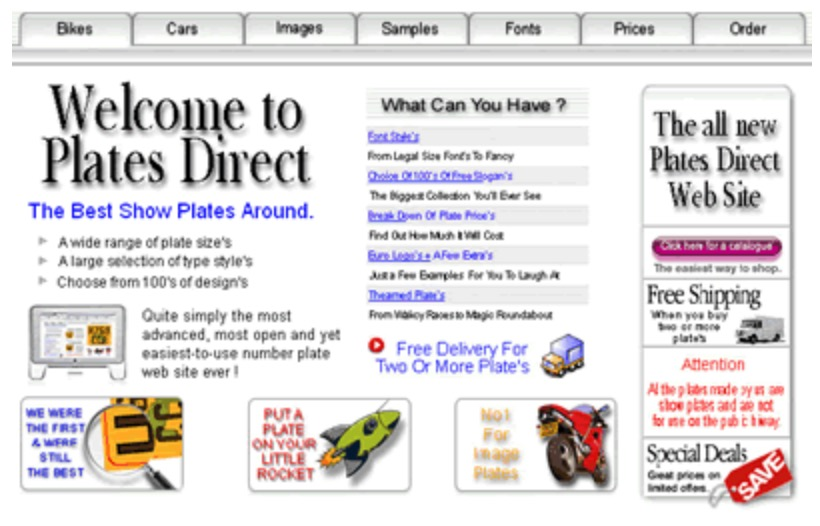

Rule No. 1
Do not steal.
Hot Linking
Hot linking is including source material from another server in your code to be hosted elsewhere.
It costs money to host digital files and transfer those files to users. When you "hot link" a file, you are using stealing the hosting resources of another person, business.
Example
The image below is coming directly from Wikipedia. DO NOT do this.

Photo by Marc Averette (BY-SA 3.0)
Avoid Hot Linking
As long as you have permission to use the media, download it and upload it to your own server. Link to the file on your server.
The image below is in the file structure on our server:
Photo by Marc Averette (BY-SA 3.0)
Design/Code Theft
It is considered stealing to take a design (or unique elements of a design) and make them your own.
Usually "pirated" web sites are based on stolen source materials, code.
Example A
Original: 37 Signals
Copy: HKAD
via pirated-sites.com
Example B
Original: Apple
Copy: Plates Direct
via pirated-sites.com
Copyright
The creator of any work has exclusive rights to use and distribute that work.
By default, all work you come across is protected by copyright.
You may not use copyrighted works unless you have explicit permission from the owner of the work.
Don't...
- Use search engines to find images, video
- Sample music from your personal library for video
- Copy text from another source
- Download fonts to create a logo
What about...
"I ran in a marathon and bought images of the moment I crossed the finish line. Can I use these on the web?"
It depends.
Unless the photographer sold you the rights to freely use the image in personal or commercial settings, you may not. Just because you purchased the images does not guarantee your rights to use them as you please.
When in doubt, ASK.
What about...
"I did work for a business that I'd like to showcase on the web..."
Again, it depends.
You are the creator of the work, but you may have ceeded ownership of the work to your client. As long as the work is not secret or protected by a non-disclosure agreement, you can probably use it.
What May Be Used?
- Open-source software, libraries*
- Creative Commons media
- Public domain media
A list of resources will be provided during the semester.
*Not all open-source libraries (i.e. Bootstrap, Foundation) are permitted in this class.
Attribution
Creative Commons media always requires attribution.
Not all software, libraries or public domain media require attribution. Still, always give credit to the original author.